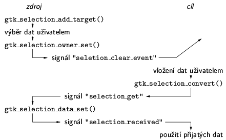
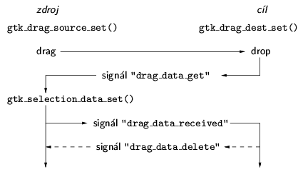

Knihovna GLib obsahuje rùzné u¾iteèné funkce a datové struktury. Není svázána s toolkitem GTK+, dá se pou¾ívat i samostatnì. GLib poskytuje náhradu pro nìkteré standardní typy jazyka C, definuje napø. gchar, gint, gpointer, guint16... Souèástí GLib jsou i redefinice standardních knihovních funkcí, jako jsou funkce pro manipulaci s nulou ukonèenými øetìzci ve stylu jazyka C (g_snprintf, g_strcasecmp, g_strdup, atd.). Dùvodem existence této èásti GLib je snaha o pøenositelnost. V moderních unixových systémech u¾ obvykle knihovny obsahují v¹e, co by podle standardù obsahovat mìly, a definice toho samého pod jiným jménem se mù¾e zdát nadbyteèná. Nicménì v dobì, kdy GLib a GTK+ zaèaly vznikat, nebyly systémové knihovny na rùzných verzích Unixu dostateènì kompatibilní. Knihovna GLib navíc funguje i na jiných platformách, jako MS Windows.
Druhá èást GLib obsahuje pomocné funkce a makra. Jsou zde makra pro pøetypování mezi èísly a ukazateli (GINT_TO_POINTER, GPOINTER_TO_INT). Ladìní programù usnadòují makra g_return_if_fail (pro funkce s návratovým typem void) a g_return_val_if_fail (pro funkce vracející hodnotu). Jejich typické pou¾ití je kontrola parametrù pøi vstupu do funkce. Pokud není splnìná podmínka zadaná jako parametr makra, vypí¹e se chybové hlá¹ení a provede se návrat z aktuální funkce. Dal¹í ladicí makra jsou g_assert a g_assert_not_reached. GLib má vlastní funkce pro alokace pamìti, které ukonèí bìh programu, pokud nelze alokaci provést: g_malloc je obdoba standardní funkce malloc a g_malloc0 navíc naalokovanou pamì» vynuluje (jako calloc). Pro dealokaci slou¾í funkce g_free.
Ve tøetí èásti knihovny GLib jsou definovány datové struktury podobné STL kontejnerùm v C++. K dispozici jsou øetìzce GString, které automaticky zvìt¹ují datový buffer pøi prodlu¾ování øetìzce, jednosmìrné (GSList) a obousmìrné (GList) spojové seznamy, vyvá¾ené binární stromy (GTree), n-ární stromy (GNode), ha¹ovací tabulky (GHashTable), automaticky se zvìt¹ující pole (GArray), aj.
Poslední skupina typù a funkcí v GLib poskytuje prostøedky, nad kterými je postavena infrastruktura toolkitu GTK+. Struktura GHookList reprezentuje seznam callback funkcí. V GTK+ se pou¾ívá v mechanismu registrace a volání handlerù signálù. Z generického cyklu pro zpracování událostí je odvozena funkce gtk_main. Lexikální analyzátor se pou¾ívá pøi zpracování resource souborù definujících styly widgetù.
Zatím jsme uva¾ovali grafické aplikace, které komunikují pouze s u¾ivatelem. Program èeká v gtk_main na událost od X serveru, zpracuje ji a vrátí se zpìt do gtk_main. Kdy¾ není ¾ádná událost k dispozici, program nic nedìlá. Takový model ale není v¾dy postaèující. Nìkdy je potøeba provádìt urèité akce periodicky. Napø. pøi zobrazování animace se v pravidelných intervalech pøekresluje obsah widgetu. Pomocí gtk_timeout_add lze zaregistrovat funkci, která bude volána po uplynutí zadaného poètu milisekund. Kdy¾ funkce vrátí TRUE, bude se volat znovu za stejnou dobu. Návratová hodnota FALSE nebo volání gtk_timeout_remove funkci odregistruje, tak¾e se u¾ nebude provádìt. Nìkdy potøebujeme urèitou funkci volat tak èasto, jak je to mo¾né, napø. pokud ka¾dé zavolání provede èást nìjakého dlouhotrvajícího výpoètu. K tomuto úèelu se dají vyu¾ít funkce gtk_idle_add a gtk_idle_remove, které fungují podobnì jako timeouty, ale registrovaná funkce se bude volat v¾dy, kdy¾ ve frontì neèeká na zpracování ¾ádná událost.
Pokud program potøebuje èíst nebo zapisovat do souboru, zaøízení nebo soketu, je potøeba zajistit správné kódování dat a nezablokovat u¾ivatelské rozhraní pøi èekání na data. Oba problémy v GTK+, resp. GLib, øe¹í I/O kanály (typ GIOChannel). Kdy¾ máme otevøený deskriptor, voláním funkce g_io_channel_unix_new k nìmu vytvoøíme kanál. Pomocí g_io_channel_set_encoding se dá nastavit kódování dat v kanálu. Implicitnì se pou¾ívá UTF-8. Jestli¾e nechceme, aby kanál do dat jakkoliv zasahoval, nastavíme kódování na NULL. I/O kanály pou¾ívají poèítání referencí. Kanál se zru¹í, kdy¾ g_io_channel_unref sní¾í poèet referencí na nulu. Volání g_io_add_watch zaregistruje pro zadaný kanál handler, který se bude volat, kdy¾ na kanálu nastane po¾adovaná událost: je k dispozici aspoò 1 bajt dat ke ètení (G_IO_IN) nebo lze aspoò 1 bajt zapsat (G_IO_OUT). Èekání na kanálech je souèástí gtk_main, tak¾e neblokuje fungování u¾ivatelského rozhraní.
Styl, jakým se zobrazují widgety, lze konfigurovat pomocí textových resource souborù. V rámci stylu je definován font pou¾ívaný widgetem, barvy pozadí a popøedí, pøípadnì pixmapa na pozadí. V resource souboru se dají také pøiøazovat signály ke klávesám a tak nastavit, ¾e stisk urèité klávesy vyvolá nìjakou funkci v programu. Funkce gtk_init naèítá soubory SYSCONFDIR/gtk-2.0/gtkrc (kde SYSCONFDIR je adresáø nastavený pøi instalaci toolkitu) a $HOME/.gtkrc-2.0. Navíc ète je¹tì soubor specifický pro aktuální locale, napø. $HOME/.gtkrc-2.0.cs_CZ. Dal¹í resource soubory je mo¾né naèíst voláním funkce gtk_rc_parse.
V resource souboru jsou oddìlené definice stylù a mapování kláves od jejich pøiøazení jednotlivým widgetùm. Definice stylu mù¾e vypadat takto:
style "my-menu"
{
font="-*-arial-medium-r-*-*-*-120-*-*-p-*-iso8859-2"
bg[PRELIGHT] = { 0.0, 0.0, 0.6 }
fg[PRELIGHT] = { 1.0, 1.0, 1.0 }
}
Ka¾dý styl má své jméno. Font se nastavuje buï pomocí font a
fontset (X-ová jména fontù), nebo pomocí font_name (jména
fontù ve tvaru pro knihovnu Pango). Tato poslední varianta má nejvy¹¹í
prioritu. Barvy se definují samostatnì pro rùzné stavy widgetu:
Pokud chceme umo¾nit nastavovat styl pro konkrétní widget, mìli bychom widget pojmenovat pomocí gtk_widget_set_name. Následnì mu mù¾eme v resource souboru pøiøadit styl takto:
widget "mywindow.*.GtkMenuItem" style "my-menu"Jméno widgetu v resource souboru zadáváme ve formì posloupnosti jmen widgetù oddìlených teèkou, která zaèíná v top-level oknì a konèí ve widgetu, jeho¾ styl nastavujeme. Pokud nemá nìkterý widget v posloupnosti nastavené jméno, pou¾ívá se jméno jeho tøídy (v na¹em pøíkladu je to pøípad GtkMenuItem). V cestì od top-level okna k widgetu mù¾eme pou¾ít wildcardy „*“ (zastupuje libovolnou posloupnost znakù) a „?“ (zastupuje jeden znak).
Místo nastavení konkrétního widgetu lze urèit styl pro v¹echny widgety z nìjaké tøídy:
widget_class "GtkWindow.*.GtkMenuItem style "my-menu"Opìt se zadává posloupnost jmen zaèínající top-level oknem, ale tentokrát to jsou jména tøíd. Poslední variantou je nastavení stylu pro úplnì v¹echny widgety v aplikaci, které patøí do urèité tøídy nebo do nìkteré z ní odvozené tøídy:
class "GtkMenuItem" style "my-menu"
Polo¾ky ze v¹ech naètených resource souborù, je¾ odpovídají urèitému widgetu, se skládají dohromady tak, ¾e nejvy¹¹í prioritu mají polo¾ky widget, následuje widget_class a nejmen¹í prioritu má class. Mezi polo¾kami stejného typu mají pøednost ty, které byly naèteny pozdìji.
Základním mechanismem komunikace mezi programy v GTK+ jsou výbìry (selections). Z pohledu u¾ivatele funguje výbìr velice jednodu¹e. U¾ivatel my¹í oznaèí napø. blok textu a kliknutím prostøedním tlaèítkem ho vlo¾í do jiného widgetu. Výbìry v GTK+ jsou implementovány pomocí funkcí pro výbìry v Xlib. Pou¾itím standardního mechanismu výbìrù X je zaji¹tìno, ¾e aplikace GTK+ mohou komunikovat i s X-ovými programy pou¾ívajícími jiné toolkity nebo jen samotnou knihovnu Xlib. Pøenos dat probíhá prostøednictvím X serveru, komunikující aplikace mezi sebou nemusí mít pøímé spojení. Nìkteré widgety, jako GtkEntry nebo GtkTextView, umí pracovat s výbìry ani¾ by se o to musel programátor starat.
Obr. 1 ukazuje fungování selections na stranì zdroje i cíle pøenosu dat. Pokud má být widget schopen poskytovat data pro výbìr, musí ka¾dý typ (v terminologii X cíl – target), do nìho¾ je schopen data konvertovat, registrovat funkcí gtk_selection_add_target. Tuto funkci je nutné volat pro ka¾dou dvojici výbìr, cíl. Obvykle se pou¾ívá primární výbìr GDK_PRIMARY_SELECTION. Widgety umí automaticky poskytovat cíl "TARGETS", co¾ nejsou data, ale seznam v¹ech cílù, které má widget registrované. Kdy¾ u¾ivatel oznaèí vybraná data, widget si pøivlastní výbìr voláním gtk_selection_owner_set. Pøedchozí vlastník výbìru dostane signál "selection_clear_event". Obvykle na nìj reaguje zru¹ením grafického zvýraznìní vybraných dat. Vlo¾ení vybraných dat do cílového widgetu je aktivováno akcí u¾ivatele. Proces pøenosu dat zahájí funkce gtk_selection_convert. Zadává se po¾adovaný výbìr a cíl (typ dat). Vlastník widgetu je o ¾ádosti o data informován signálem "selection_get". Zareaguje na nìj ulo¾ením dat v po¾adovaném formátu pomocí funkce gtk_selection_data_set. Následnì cílový widget dostane signál "selection_received". Pøijatá data dostane jako parametr handleru tohoto signálu. Komunikace je tedy asynchronní. Cílový widget po¾ádá o obsah výbìru, ale neèeká na dokonèení pøenosu dat. Místo toho pokraèuje normálnì dál ve zpracování událostí a èasem dostane data prostøednictvím signálu.

Obr. 1: Komunikace pomocí výbìru (selection)
GTK+ poskytuje je¹tì alternativní metodu manipulace s výbìry – clipboard. Pøíslu¹né funkce mají prefix gtk_clipboard_. Typy dat (cíle) a jména výbìrù jsou øetìzce, napø. "TARGETS", "STRING", "INTEGER". Aby se nepøená¹ely potenciálnì dlouhé øetìzce, pou¾ívají se místo nich èíselné identifikátory – atomy. Program, který chce pou¾ívat atom, si jej nejprve zaregistruje voláním gdk_atom_intern. Jako parametr zadá jméno atomu – øetìzec. Zpìt dostane atom – èíslo. Atomy jsou platné v rámci jednoho spu¹tìní X serveru. Ka¾dé volání gdk_atom_intern se stejným jménem vrátí stejný atom. Pro rùzná jména dostaneme rùzné atomy.
Dal¹í zpùsob komunikace mezi programy je drag&drop. Opìt pou¾ívá standardní mechanismy X a funguje i s programy, které nepou¾ívají toolkit GTK+. Schéma jeho fungování je na obr. 2.

Obr. 2: Drag &drop
Widget, který chce být potenciálním zdrojem nebo cílem operace drag&drop, se musí registrovat pomocí funkcí gtk_drag_source_set, resp. gtk_drag_dest_set. Jestli¾e u¾ivatel pøetáhne my¹í ikonu reprezentující nìjaká data z jednoho widgetu do jiného, dostane zdrojový widget signál "drag_data_get". Zareaguje na nìj ulo¾ením dat pomocí volání gtk_selection_data_set. Cílový widget dostane signál "drag_data_received", který má jako jeden z parametrù doruèená data. Jestli¾e operace drag&drop byla typu „move“ dostane zdroj signál "drag_data_delete" informující o tom, ¾e data dorazila do cíle a na zdrojové stranì mohou být smazána.